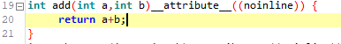

Hi all,
it's been said before here and there, but only as part of other topics,
so I want to say it again, loud and clear and bright:
When you are using / writing code-heavy objects that will be used like >5 times
in a patch, it makes total sense to do the following:
- chop your code into functions, and tell axo's compiler NOT TO INLINE THEM
- collect it inside a 'master- object'
-refer to it from other 'slave - objects'.
code - snippet what I mean by not inlining:

I've attached a patch demonstrating the technique.
no inline.axp (11.4 KB)
..'no inline' will eventually hit your CPU a bit, but at k-rate not all that much, but can save a lot of SRAM.
I'm so ON about this because I noticed the factory table/save/load - objects are eating TONS of SRAM
when you are using more than 1 or 2 of them, probably because they also have a dependency to 'fatfs'
included.
so what I did was to tear apart the code and centralize them into a 'master-object',
they are now in the community library (rbrt/SD...)
I'll post something right away.